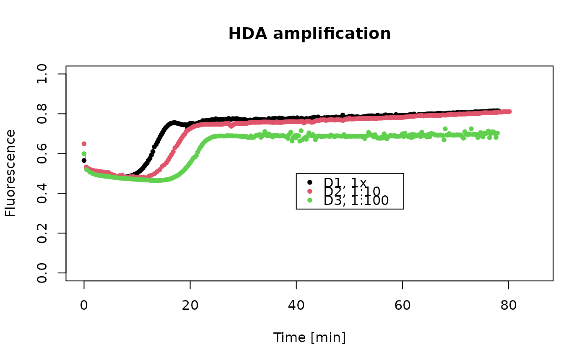
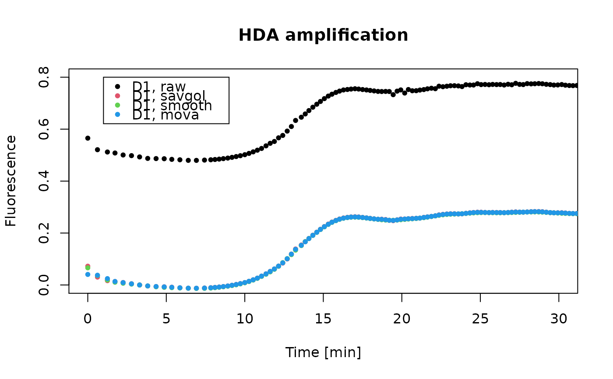
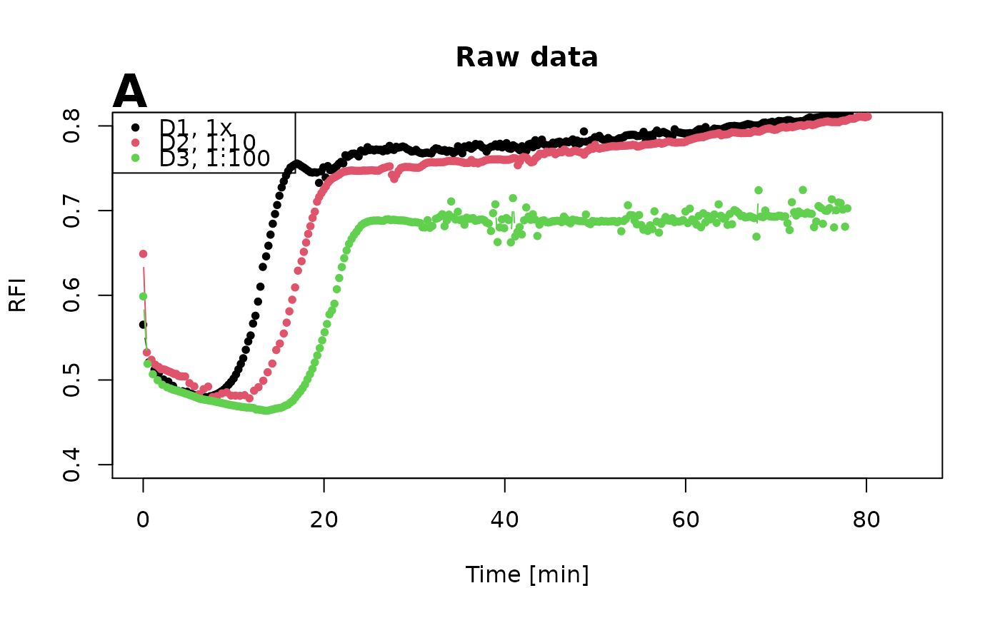
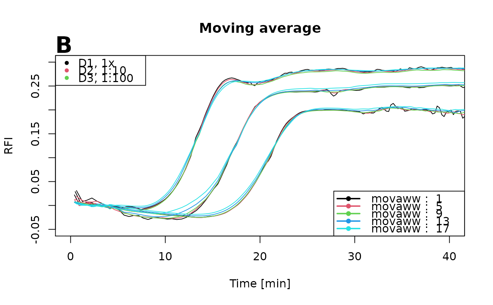
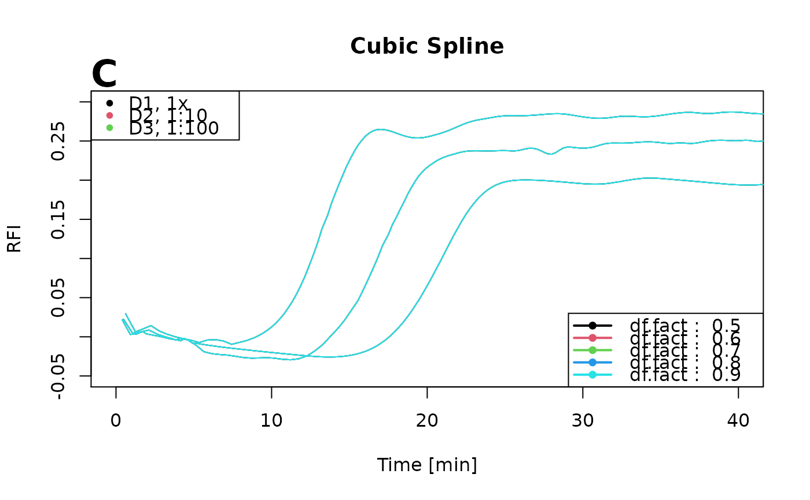
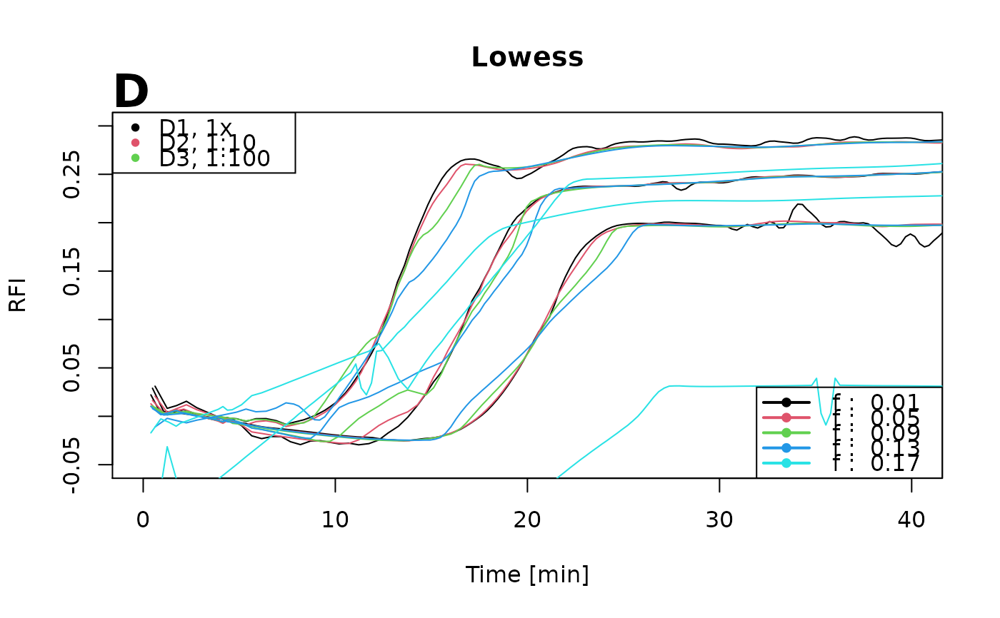
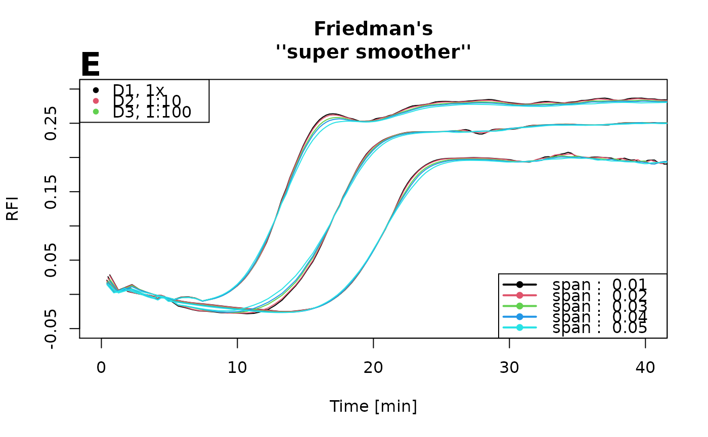

C85.RdA Helicase Dependent Amplification (HDA) of Vimentin (Vim) was performed. The 'VideoScan' Platform (Roediger et al. (2013)) was used to monitor the amplification. The HDA was performed at 65 degrees Celsius. Three concentrations of input DNA (D1, D2, D3) were used.
data(C85)
A data frame with 301 observations on the following 5 variables.
CycleCycles HDA measurements.
t.D1Dilution 1, elapsed time during HDA in seconds.
MFI.D1Dilution 1, fluorescence.
t.D2Dilution 2, elapsed time during HDA in seconds.
MFI.D2Dilution 2, fluorescence.
t.D3Dilution 3, elapsed time during HDA in seconds.
MFI.D3Dilution 3, fluorescence.
To perform an isothermal amplification in 'VideoScan', standard conditions for the IsoAmp(R) III Universal tHDA Kit (Biohelix) were used. Primers and templates are described in Roediger et al. (2013). The reaction was composed of reaction mix A)10 micro L A. bidest, 1.25 micro L 10xbuffer, 0.75 micro L primer(150nM final), 0.5 micro L template plasmid. Preincubation: This mixture was incubated for 2 min at 95 degree. Celsius and immediately placed on ice. Reaction mix B) 5 micro L A. bidest., 1.25 micro L 10x buffer, 2 micro L NaCl, 1.25 micro L MgSO4, 1.75 micro L dNTPs, 0.25 micro L EvaGreen, 1 micro L enzyme mix. The mix was covered with 50 micro L mineral oil. The fluorescence measurement in 'VideoScan' 'HCU' started directly after adding buffer B at 65 degrees Celsius. A 1x (D1), a 1:10 dilution (D2) and a 1:100 (D3) dilution were tested. Temperature profile (after Preincubation): - 60 seconds at 65 degrees Celsius - 11 seconds at 55 degrees Celsius && Measurement
Claudia Deutschmann & Stefan Roediger, BTU Cottbus - Senftenberg, Senftenberg, Germany
A Highly Versatile Microscope Imaging Technology Platform for the Multiplex Real-Time Detection of Biomolecules and Autoimmune Antibodies. S. Roediger, P. Schierack, A. Boehm, J. Nitschke, I. Berger, U. Froemmel, C. Schmidt, M. Ruhland, I. Schimke, D. Roggenbuck, W. Lehmann and C. Schroeder. Advances in Biochemical Bioengineering/Biotechnology. 133:33--74, 2013.
data(C85) # First example plot(NA, NA, xlim = c(0,85), ylim = c(0,1), xlab = "Time [min]", ylab = "Fluorescence", main = "HDA amplification")# Second example plot(NA, NA, xlim = c(0,30), ylim = c(0,0.8), xlab = "Time [min]", ylab = "Fluorescence", main = "HDA amplification")points(C85[, 2]/60, smoother(C85[, 2]/60, C85[, 3], method = list("savgol")), type = "b", col = 2, pch = 20)#> Warning: x is not uniform/equidistant (different inter cycle or time intervals. #> This may cause artifacts during the pre-processing.#> Warning: Points are not equidistant. The results of interpolation #> could be not correct.#> Warning: x is not uniform/equidistant (different inter cycle or time intervals. #> This may cause artifacts during the pre-processing.points(C85[, 2]/60, smoother(C85[, 2]/60, C85[, 3], method = list("smooth")), type = "b", col = 3, pch = 20)#> Warning: x is not uniform/equidistant (different inter cycle or time intervals. #> This may cause artifacts during the pre-processing.#> Warning: not using invalid df; must have 1 < df <= n := #{unique x} = 301#> Warning: Points are not equidistant. The results of interpolation #> could be not correct.#> Warning: x is not uniform/equidistant (different inter cycle or time intervals. #> This may cause artifacts during the pre-processing.points(C85[, 2]/60, smoother(C85[, 2]/60, C85[, 3], method = list("mova")), type = "b", col = 4, pch = 20)#> Warning: x is not uniform/equidistant (different inter cycle or time intervals. #> This may cause artifacts during the pre-processing.#> Warning: Points are not equidistant. The results of interpolation #> could be not correct.#> Warning: x is not uniform/equidistant (different inter cycle or time intervals. #> This may cause artifacts during the pre-processing.# Third example # Comparison of Lowess, Moving average and splines to smooth amplification # curve data of # a HDA using the 'VideoScan' 'HCU' for amplification and monitoring. xrange <- 2:2400 plot(NA, NA, xlim = c(0,85), ylim = c(0.4, 0.8), xlab = "Time [min]", ylab = "RFI", main = "Raw data")plot(NA, NA, xlim = c(0,40), ylim = c(-0.05, 0.3), xlab = "Time [min]", ylab = "RFI", main = "Moving average")movaww <- seq(1,17,4) for (i in 1:length(movaww)) { for (j in c(2,4,6)) { tmp <- data.frame(na.omit(C85[xrange, j])/60, na.omit(C85[xrange, j + 1])) tmp.out <- smoother(tmp[, 1], tmp[, 2], method = list(mova = list(movaww = movaww[i])), bg.outliers = TRUE) lines(data.frame(tmp[, 1], tmp.out), type = "l", pch = 20, cex = 0.5, col = i) } }#> Warning: x is not uniform/equidistant (different inter cycle or time intervals. #> This may cause artifacts during the pre-processing.#> Warning: Points are not equidistant. The results of interpolation #> could be not correct.#> Warning: x is not uniform/equidistant (different inter cycle or time intervals. #> This may cause artifacts during the pre-processing.#> Warning: x is not uniform/equidistant (different inter cycle or time intervals. #> This may cause artifacts during the pre-processing.#> Warning: Points are not equidistant. The results of interpolation #> could be not correct.#> Warning: x is not uniform/equidistant (different inter cycle or time intervals. #> This may cause artifacts during the pre-processing.#> Warning: x is not uniform/equidistant (different inter cycle or time intervals. #> This may cause artifacts during the pre-processing.#> Warning: Points are not equidistant. The results of interpolation #> could be not correct.#> Warning: x is not uniform/equidistant (different inter cycle or time intervals. #> This may cause artifacts during the pre-processing.#> Warning: x is not uniform/equidistant (different inter cycle or time intervals. #> This may cause artifacts during the pre-processing.#> Warning: Points are not equidistant. The results of interpolation #> could be not correct.#> Warning: x is not uniform/equidistant (different inter cycle or time intervals. #> This may cause artifacts during the pre-processing.#> Warning: x is not uniform/equidistant (different inter cycle or time intervals. #> This may cause artifacts during the pre-processing.#> Warning: Points are not equidistant. The results of interpolation #> could be not correct.#> Warning: x is not uniform/equidistant (different inter cycle or time intervals. #> This may cause artifacts during the pre-processing.#> Warning: x is not uniform/equidistant (different inter cycle or time intervals. #> This may cause artifacts during the pre-processing.#> Warning: Points are not equidistant. The results of interpolation #> could be not correct.#> Warning: x is not uniform/equidistant (different inter cycle or time intervals. #> This may cause artifacts during the pre-processing.#> Warning: x is not uniform/equidistant (different inter cycle or time intervals. #> This may cause artifacts during the pre-processing.#> Warning: More than 2 missing values in last 6 elements. #> Approximation may not be correct.#> Warning: More than 2 missing values in first 6 elements. #> Approximation may not be correct.#> Warning: Sequence of more than 4 missing values in data. #> Approximation may not be correct.#> Warning: Points are not equidistant. The results of interpolation #> could be not correct.#> Warning: x is not uniform/equidistant (different inter cycle or time intervals. #> This may cause artifacts during the pre-processing.#> Warning: x is not uniform/equidistant (different inter cycle or time intervals. #> This may cause artifacts during the pre-processing.#> Warning: More than 2 missing values in last 6 elements. #> Approximation may not be correct.#> Warning: More than 2 missing values in first 6 elements. #> Approximation may not be correct.#> Warning: Sequence of more than 4 missing values in data. #> Approximation may not be correct.#> Warning: Points are not equidistant. The results of interpolation #> could be not correct.#> Warning: x is not uniform/equidistant (different inter cycle or time intervals. #> This may cause artifacts during the pre-processing.#> Warning: x is not uniform/equidistant (different inter cycle or time intervals. #> This may cause artifacts during the pre-processing.#> Warning: More than 2 missing values in last 6 elements. #> Approximation may not be correct.#> Warning: More than 2 missing values in first 6 elements. #> Approximation may not be correct.#> Warning: Sequence of more than 4 missing values in data. #> Approximation may not be correct.#> Warning: Points are not equidistant. The results of interpolation #> could be not correct.#> Warning: x is not uniform/equidistant (different inter cycle or time intervals. #> This may cause artifacts during the pre-processing.#> Warning: x is not uniform/equidistant (different inter cycle or time intervals. #> This may cause artifacts during the pre-processing.#> Warning: More than 2 missing values in last 6 elements. #> Approximation may not be correct.#> Warning: More than 2 missing values in first 6 elements. #> Approximation may not be correct.#> Warning: Sequence of more than 4 missing values in data. #> Approximation may not be correct.#> Warning: Points are not equidistant. The results of interpolation #> could be not correct.#> Warning: x is not uniform/equidistant (different inter cycle or time intervals. #> This may cause artifacts during the pre-processing.#> Warning: x is not uniform/equidistant (different inter cycle or time intervals. #> This may cause artifacts during the pre-processing.#> Warning: More than 2 missing values in last 6 elements. #> Approximation may not be correct.#> Warning: More than 2 missing values in first 6 elements. #> Approximation may not be correct.#> Warning: Sequence of more than 4 missing values in data. #> Approximation may not be correct.#> Warning: Points are not equidistant. The results of interpolation #> could be not correct.#> Warning: x is not uniform/equidistant (different inter cycle or time intervals. #> This may cause artifacts during the pre-processing.#> Warning: x is not uniform/equidistant (different inter cycle or time intervals. #> This may cause artifacts during the pre-processing.#> Warning: More than 2 missing values in last 6 elements. #> Approximation may not be correct.#> Warning: More than 2 missing values in first 6 elements. #> Approximation may not be correct.#> Warning: Sequence of more than 4 missing values in data. #> Approximation may not be correct.#> Warning: Points are not equidistant. The results of interpolation #> could be not correct.#> Warning: x is not uniform/equidistant (different inter cycle or time intervals. #> This may cause artifacts during the pre-processing.#> Warning: x is not uniform/equidistant (different inter cycle or time intervals. #> This may cause artifacts during the pre-processing.#> Warning: More than 2 missing values in last 6 elements. #> Approximation may not be correct.#> Warning: More than 2 missing values in first 6 elements. #> Approximation may not be correct.#> Warning: Sequence of more than 4 missing values in data. #> Approximation may not be correct.#> Warning: Points are not equidistant. The results of interpolation #> could be not correct.#> Warning: x is not uniform/equidistant (different inter cycle or time intervals. #> This may cause artifacts during the pre-processing.#> Warning: x is not uniform/equidistant (different inter cycle or time intervals. #> This may cause artifacts during the pre-processing.#> Warning: More than 2 missing values in last 6 elements. #> Approximation may not be correct.#> Warning: More than 2 missing values in first 6 elements. #> Approximation may not be correct.#> Warning: Sequence of more than 4 missing values in data. #> Approximation may not be correct.#> Warning: Points are not equidistant. The results of interpolation #> could be not correct.#> Warning: x is not uniform/equidistant (different inter cycle or time intervals. #> This may cause artifacts during the pre-processing.#> Warning: x is not uniform/equidistant (different inter cycle or time intervals. #> This may cause artifacts during the pre-processing.#> Warning: More than 2 missing values in last 6 elements. #> Approximation may not be correct.#> Warning: More than 2 missing values in first 6 elements. #> Approximation may not be correct.#> Warning: Sequence of more than 4 missing values in data. #> Approximation may not be correct.#> Warning: Points are not equidistant. The results of interpolation #> could be not correct.#> Warning: x is not uniform/equidistant (different inter cycle or time intervals. #> This may cause artifacts during the pre-processing.plot(NA, NA, xlim = c(0,40), ylim = c(-0.05, 0.3), xlab = "Time [min]", ylab = "RFI", main = "Cubic Spline")df.fact <- seq(0.5,0.9,0.1) for (i in 1:length(df.fact)) { for (j in c(2,4,6)) { tmp <- data.frame(na.omit(C85[xrange, j])/60, na.omit(C85[xrange, j + 1])) tmp.out <- smoother(tmp[, 1], tmp[, 2], method = list(smooth = list(df.fact = df.fact[i])), bg.outliers = TRUE) lines(data.frame(tmp[, 1], tmp.out), type = "l", pch = 20, cex = 0.5, col = i) } }#> Warning: x is not uniform/equidistant (different inter cycle or time intervals. #> This may cause artifacts during the pre-processing.#> Warning: not using invalid df; must have 1 < df <= n := #{unique x} = 300#> Warning: Points are not equidistant. The results of interpolation #> could be not correct.#> Warning: x is not uniform/equidistant (different inter cycle or time intervals. #> This may cause artifacts during the pre-processing.#> Warning: x is not uniform/equidistant (different inter cycle or time intervals. #> This may cause artifacts during the pre-processing.#> Warning: not using invalid df; must have 1 < df <= n := #{unique x} = 300#> Warning: Points are not equidistant. The results of interpolation #> could be not correct.#> Warning: x is not uniform/equidistant (different inter cycle or time intervals. #> This may cause artifacts during the pre-processing.#> Warning: x is not uniform/equidistant (different inter cycle or time intervals. #> This may cause artifacts during the pre-processing.#> Warning: not using invalid df; must have 1 < df <= n := #{unique x} = 300#> Warning: Points are not equidistant. The results of interpolation #> could be not correct.#> Warning: x is not uniform/equidistant (different inter cycle or time intervals. #> This may cause artifacts during the pre-processing.#> Warning: x is not uniform/equidistant (different inter cycle or time intervals. #> This may cause artifacts during the pre-processing.#> Warning: not using invalid df; must have 1 < df <= n := #{unique x} = 300#> Warning: Points are not equidistant. The results of interpolation #> could be not correct.#> Warning: x is not uniform/equidistant (different inter cycle or time intervals. #> This may cause artifacts during the pre-processing.#> Warning: x is not uniform/equidistant (different inter cycle or time intervals. #> This may cause artifacts during the pre-processing.#> Warning: not using invalid df; must have 1 < df <= n := #{unique x} = 300#> Warning: Points are not equidistant. The results of interpolation #> could be not correct.#> Warning: x is not uniform/equidistant (different inter cycle or time intervals. #> This may cause artifacts during the pre-processing.#> Warning: x is not uniform/equidistant (different inter cycle or time intervals. #> This may cause artifacts during the pre-processing.#> Warning: not using invalid df; must have 1 < df <= n := #{unique x} = 300#> Warning: Points are not equidistant. The results of interpolation #> could be not correct.#> Warning: x is not uniform/equidistant (different inter cycle or time intervals. #> This may cause artifacts during the pre-processing.#> Warning: x is not uniform/equidistant (different inter cycle or time intervals. #> This may cause artifacts during the pre-processing.#> Warning: not using invalid df; must have 1 < df <= n := #{unique x} = 300#> Warning: Points are not equidistant. The results of interpolation #> could be not correct.#> Warning: x is not uniform/equidistant (different inter cycle or time intervals. #> This may cause artifacts during the pre-processing.#> Warning: x is not uniform/equidistant (different inter cycle or time intervals. #> This may cause artifacts during the pre-processing.#> Warning: not using invalid df; must have 1 < df <= n := #{unique x} = 300#> Warning: Points are not equidistant. The results of interpolation #> could be not correct.#> Warning: x is not uniform/equidistant (different inter cycle or time intervals. #> This may cause artifacts during the pre-processing.#> Warning: x is not uniform/equidistant (different inter cycle or time intervals. #> This may cause artifacts during the pre-processing.#> Warning: not using invalid df; must have 1 < df <= n := #{unique x} = 300#> Warning: Points are not equidistant. The results of interpolation #> could be not correct.#> Warning: x is not uniform/equidistant (different inter cycle or time intervals. #> This may cause artifacts during the pre-processing.#> Warning: x is not uniform/equidistant (different inter cycle or time intervals. #> This may cause artifacts during the pre-processing.#> Warning: not using invalid df; must have 1 < df <= n := #{unique x} = 300#> Warning: Points are not equidistant. The results of interpolation #> could be not correct.#> Warning: x is not uniform/equidistant (different inter cycle or time intervals. #> This may cause artifacts during the pre-processing.#> Warning: x is not uniform/equidistant (different inter cycle or time intervals. #> This may cause artifacts during the pre-processing.#> Warning: not using invalid df; must have 1 < df <= n := #{unique x} = 300#> Warning: Points are not equidistant. The results of interpolation #> could be not correct.#> Warning: x is not uniform/equidistant (different inter cycle or time intervals. #> This may cause artifacts during the pre-processing.#> Warning: x is not uniform/equidistant (different inter cycle or time intervals. #> This may cause artifacts during the pre-processing.#> Warning: not using invalid df; must have 1 < df <= n := #{unique x} = 300#> Warning: Points are not equidistant. The results of interpolation #> could be not correct.#> Warning: x is not uniform/equidistant (different inter cycle or time intervals. #> This may cause artifacts during the pre-processing.#> Warning: x is not uniform/equidistant (different inter cycle or time intervals. #> This may cause artifacts during the pre-processing.#> Warning: not using invalid df; must have 1 < df <= n := #{unique x} = 300#> Warning: Points are not equidistant. The results of interpolation #> could be not correct.#> Warning: x is not uniform/equidistant (different inter cycle or time intervals. #> This may cause artifacts during the pre-processing.#> Warning: x is not uniform/equidistant (different inter cycle or time intervals. #> This may cause artifacts during the pre-processing.#> Warning: not using invalid df; must have 1 < df <= n := #{unique x} = 300#> Warning: Points are not equidistant. The results of interpolation #> could be not correct.#> Warning: x is not uniform/equidistant (different inter cycle or time intervals. #> This may cause artifacts during the pre-processing.#> Warning: x is not uniform/equidistant (different inter cycle or time intervals. #> This may cause artifacts during the pre-processing.#> Warning: not using invalid df; must have 1 < df <= n := #{unique x} = 300#> Warning: Points are not equidistant. The results of interpolation #> could be not correct.#> Warning: x is not uniform/equidistant (different inter cycle or time intervals. #> This may cause artifacts during the pre-processing.plot(NA, NA, xlim = c(0,40), ylim = c(-0.05, 0.3), xlab = "Time [min]", ylab = "RFI", main = "Lowess")f <- seq(0.01,0.2,0.04) for (i in 1:length(f)) { for (j in c(2,4,6)) { tmp <- data.frame(na.omit(C85[xrange, j])/60, na.omit(C85[xrange, j + 1])) tmp.out <- smoother(tmp[, 1], tmp[, 2], method = list(lowess = list(f = f[i])), bg.outliers = TRUE) lines(data.frame(tmp[, 1], tmp.out), type = "l", pch = 20, cex = 0.5, col = i) } }#> Warning: x is not uniform/equidistant (different inter cycle or time intervals. #> This may cause artifacts during the pre-processing.#> Warning: Points are not equidistant. The results of interpolation #> could be not correct.#> Warning: x is not uniform/equidistant (different inter cycle or time intervals. #> This may cause artifacts during the pre-processing.#> Warning: x is not uniform/equidistant (different inter cycle or time intervals. #> This may cause artifacts during the pre-processing.#> Warning: Points are not equidistant. The results of interpolation #> could be not correct.#> Warning: x is not uniform/equidistant (different inter cycle or time intervals. #> This may cause artifacts during the pre-processing.#> Warning: x is not uniform/equidistant (different inter cycle or time intervals. #> This may cause artifacts during the pre-processing.#> Warning: Points are not equidistant. The results of interpolation #> could be not correct.#> Warning: x is not uniform/equidistant (different inter cycle or time intervals. #> This may cause artifacts during the pre-processing.#> Warning: x is not uniform/equidistant (different inter cycle or time intervals. #> This may cause artifacts during the pre-processing.#> Warning: Points are not equidistant. The results of interpolation #> could be not correct.#> Warning: x is not uniform/equidistant (different inter cycle or time intervals. #> This may cause artifacts during the pre-processing.#> Warning: x is not uniform/equidistant (different inter cycle or time intervals. #> This may cause artifacts during the pre-processing.#> Warning: Points are not equidistant. The results of interpolation #> could be not correct.#> Warning: x is not uniform/equidistant (different inter cycle or time intervals. #> This may cause artifacts during the pre-processing.#> Warning: x is not uniform/equidistant (different inter cycle or time intervals. #> This may cause artifacts during the pre-processing.#> Warning: Points are not equidistant. The results of interpolation #> could be not correct.#> Warning: x is not uniform/equidistant (different inter cycle or time intervals. #> This may cause artifacts during the pre-processing.#> Warning: x is not uniform/equidistant (different inter cycle or time intervals. #> This may cause artifacts during the pre-processing.#> Warning: Points are not equidistant. The results of interpolation #> could be not correct.#> Warning: x is not uniform/equidistant (different inter cycle or time intervals. #> This may cause artifacts during the pre-processing.#> Warning: x is not uniform/equidistant (different inter cycle or time intervals. #> This may cause artifacts during the pre-processing.#> Warning: Points are not equidistant. The results of interpolation #> could be not correct.#> Warning: x is not uniform/equidistant (different inter cycle or time intervals. #> This may cause artifacts during the pre-processing.#> Warning: x is not uniform/equidistant (different inter cycle or time intervals. #> This may cause artifacts during the pre-processing.#> Warning: Points are not equidistant. The results of interpolation #> could be not correct.#> Warning: x is not uniform/equidistant (different inter cycle or time intervals. #> This may cause artifacts during the pre-processing.#> Warning: x is not uniform/equidistant (different inter cycle or time intervals. #> This may cause artifacts during the pre-processing.#> Warning: Points are not equidistant. The results of interpolation #> could be not correct.#> Warning: x is not uniform/equidistant (different inter cycle or time intervals. #> This may cause artifacts during the pre-processing.#> Warning: x is not uniform/equidistant (different inter cycle or time intervals. #> This may cause artifacts during the pre-processing.#> Warning: Points are not equidistant. The results of interpolation #> could be not correct.#> Warning: x is not uniform/equidistant (different inter cycle or time intervals. #> This may cause artifacts during the pre-processing.#> Warning: x is not uniform/equidistant (different inter cycle or time intervals. #> This may cause artifacts during the pre-processing.#> Warning: Points are not equidistant. The results of interpolation #> could be not correct.#> Warning: x is not uniform/equidistant (different inter cycle or time intervals. #> This may cause artifacts during the pre-processing.#> Warning: x is not uniform/equidistant (different inter cycle or time intervals. #> This may cause artifacts during the pre-processing.#> Warning: Points are not equidistant. The results of interpolation #> could be not correct.#> Warning: x is not uniform/equidistant (different inter cycle or time intervals. #> This may cause artifacts during the pre-processing.#> Warning: x is not uniform/equidistant (different inter cycle or time intervals. #> This may cause artifacts during the pre-processing.#> Warning: Points are not equidistant. The results of interpolation #> could be not correct.#> Warning: x is not uniform/equidistant (different inter cycle or time intervals. #> This may cause artifacts during the pre-processing.#> Warning: x is not uniform/equidistant (different inter cycle or time intervals. #> This may cause artifacts during the pre-processing.#> Warning: Points are not equidistant. The results of interpolation #> could be not correct.#> Warning: x is not uniform/equidistant (different inter cycle or time intervals. #> This may cause artifacts during the pre-processing.plot(NA, NA, xlim = c(0,40), ylim = c(-0.05, 0.3), xlab = "Time [min]", ylab = "RFI", main = "Friedman's\n''super smoother''")span <- seq(0.01,0.05,0.01) for (i in 1:length(span)) { for (j in c(2,4,6)) { tmp <- data.frame(na.omit(C85[xrange, j])/60, na.omit(C85[xrange, j + 1])) tmp.out <- smoother(tmp[, 1], tmp[, 2], method = list(supsmu = list(span = span[i])), bg.outliers = TRUE) lines(data.frame(tmp[, 1], tmp.out), type = "l", pch = 20, cex = 0.5, col = i) } }#> Warning: x is not uniform/equidistant (different inter cycle or time intervals. #> This may cause artifacts during the pre-processing.#> Warning: Points are not equidistant. The results of interpolation #> could be not correct.#> Warning: x is not uniform/equidistant (different inter cycle or time intervals. #> This may cause artifacts during the pre-processing.#> Warning: x is not uniform/equidistant (different inter cycle or time intervals. #> This may cause artifacts during the pre-processing.#> Warning: Points are not equidistant. The results of interpolation #> could be not correct.#> Warning: x is not uniform/equidistant (different inter cycle or time intervals. #> This may cause artifacts during the pre-processing.#> Warning: x is not uniform/equidistant (different inter cycle or time intervals. #> This may cause artifacts during the pre-processing.#> Warning: Points are not equidistant. The results of interpolation #> could be not correct.#> Warning: x is not uniform/equidistant (different inter cycle or time intervals. #> This may cause artifacts during the pre-processing.#> Warning: x is not uniform/equidistant (different inter cycle or time intervals. #> This may cause artifacts during the pre-processing.#> Warning: Points are not equidistant. The results of interpolation #> could be not correct.#> Warning: x is not uniform/equidistant (different inter cycle or time intervals. #> This may cause artifacts during the pre-processing.#> Warning: x is not uniform/equidistant (different inter cycle or time intervals. #> This may cause artifacts during the pre-processing.#> Warning: Points are not equidistant. The results of interpolation #> could be not correct.#> Warning: x is not uniform/equidistant (different inter cycle or time intervals. #> This may cause artifacts during the pre-processing.#> Warning: x is not uniform/equidistant (different inter cycle or time intervals. #> This may cause artifacts during the pre-processing.#> Warning: Points are not equidistant. The results of interpolation #> could be not correct.#> Warning: x is not uniform/equidistant (different inter cycle or time intervals. #> This may cause artifacts during the pre-processing.#> Warning: x is not uniform/equidistant (different inter cycle or time intervals. #> This may cause artifacts during the pre-processing.#> Warning: Points are not equidistant. The results of interpolation #> could be not correct.#> Warning: x is not uniform/equidistant (different inter cycle or time intervals. #> This may cause artifacts during the pre-processing.#> Warning: x is not uniform/equidistant (different inter cycle or time intervals. #> This may cause artifacts during the pre-processing.#> Warning: Points are not equidistant. The results of interpolation #> could be not correct.#> Warning: x is not uniform/equidistant (different inter cycle or time intervals. #> This may cause artifacts during the pre-processing.#> Warning: x is not uniform/equidistant (different inter cycle or time intervals. #> This may cause artifacts during the pre-processing.#> Warning: Points are not equidistant. The results of interpolation #> could be not correct.#> Warning: x is not uniform/equidistant (different inter cycle or time intervals. #> This may cause artifacts during the pre-processing.#> Warning: x is not uniform/equidistant (different inter cycle or time intervals. #> This may cause artifacts during the pre-processing.#> Warning: Points are not equidistant. The results of interpolation #> could be not correct.#> Warning: x is not uniform/equidistant (different inter cycle or time intervals. #> This may cause artifacts during the pre-processing.#> Warning: x is not uniform/equidistant (different inter cycle or time intervals. #> This may cause artifacts during the pre-processing.#> Warning: Points are not equidistant. The results of interpolation #> could be not correct.#> Warning: x is not uniform/equidistant (different inter cycle or time intervals. #> This may cause artifacts during the pre-processing.#> Warning: x is not uniform/equidistant (different inter cycle or time intervals. #> This may cause artifacts during the pre-processing.#> Warning: Points are not equidistant. The results of interpolation #> could be not correct.#> Warning: x is not uniform/equidistant (different inter cycle or time intervals. #> This may cause artifacts during the pre-processing.#> Warning: x is not uniform/equidistant (different inter cycle or time intervals. #> This may cause artifacts during the pre-processing.#> Warning: Points are not equidistant. The results of interpolation #> could be not correct.#> Warning: x is not uniform/equidistant (different inter cycle or time intervals. #> This may cause artifacts during the pre-processing.#> Warning: x is not uniform/equidistant (different inter cycle or time intervals. #> This may cause artifacts during the pre-processing.#> Warning: Points are not equidistant. The results of interpolation #> could be not correct.#> Warning: x is not uniform/equidistant (different inter cycle or time intervals. #> This may cause artifacts during the pre-processing.#> Warning: x is not uniform/equidistant (different inter cycle or time intervals. #> This may cause artifacts during the pre-processing.#> Warning: Points are not equidistant. The results of interpolation #> could be not correct.#> Warning: x is not uniform/equidistant (different inter cycle or time intervals. #> This may cause artifacts during the pre-processing.plot(NA, NA, xlim = c(0,40), ylim = c(-0.05, 0.3), xlab = "Time [min]", ylab = "RFI", main = "Savitzky-Golay")for (j in c(2,4,6)) { tmp <- data.frame(na.omit(C85[xrange, j])/60, na.omit(C85[xrange, j + 1])) tmp.out <- smoother(tmp[, 1], tmp[, 2], method = list("savgol"), bg.outliers = TRUE) lines(data.frame(tmp[, 1], tmp.out), type = "l", pch = 20, cex = 0.5, col = 1) }#> Warning: x is not uniform/equidistant (different inter cycle or time intervals. #> This may cause artifacts during the pre-processing.#> Warning: Points are not equidistant. The results of interpolation #> could be not correct.#> Warning: x is not uniform/equidistant (different inter cycle or time intervals. #> This may cause artifacts during the pre-processing.#> Warning: x is not uniform/equidistant (different inter cycle or time intervals. #> This may cause artifacts during the pre-processing.#> Warning: Points are not equidistant. The results of interpolation #> could be not correct.#> Warning: x is not uniform/equidistant (different inter cycle or time intervals. #> This may cause artifacts during the pre-processing.#> Warning: x is not uniform/equidistant (different inter cycle or time intervals. #> This may cause artifacts during the pre-processing.#> Warning: Points are not equidistant. The results of interpolation #> could be not correct.#> Warning: x is not uniform/equidistant (different inter cycle or time intervals. #> This may cause artifacts during the pre-processing.